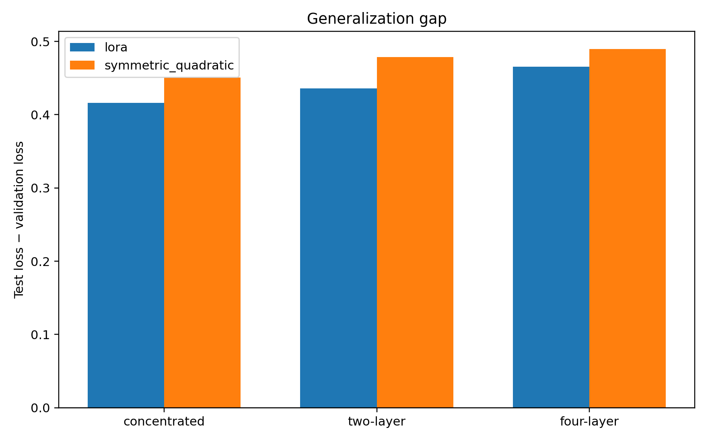

Research Project 01 · Final results
Longer training changes the comparison
The primary evidence is the 12,288-parameter, 5,000-step, three-seed comparison. Validation and held-out test are shown separately because they answer different questions.
Validation at step 5,000
| Geometry | Model | Validation loss | Validation PPL | AULC |
|---|---|---|---|---|
| Block [2], r=8 | LoRA | 3.3577 ± 0.0041 | 28.72 ± 0.12 | 3.4898 |
| Block [2], r=8 | Symmetric | 3.2559 ± 0.0048 | 25.94 ± 0.12 | 3.3691 |
| Blocks [0,11], r=4 each | LoRA | 3.2003 ± 0.0178 | 24.54 ± 0.44 | 3.3340 |
| Blocks [0,11], r=4 each | Symmetric | 3.1520 ± 0.0126 | 23.38 ± 0.30 | 3.2822 |
| Blocks [0,3,7,11], r=2 each | LoRA | 3.1537 ± 0.0204 | 23.43 ± 0.48 | 3.2812 |
| Blocks [0,3,7,11], r=2 each | Symmetric | 3.1557 ± 0.0320 | 23.48 ± 0.74 | 3.2735 |
Symmetric is lower on validation by 0.1018 loss in the concentrated placement and by 0.0483 in the two-layer placement. The four-layer endpoint difference is +0.0020 (Symmetric minus LoRA), far smaller than the observed seed variation; this endpoint is effectively tied.


Held-out WikiText-2 test
The frozen GPT-2 baseline obtains test loss 4.1279 and test perplexity 62.05 on 2,213 blocks. Final step-5,000 adapter checkpoints are evaluated without gradient updates.
| Geometry | Model | Test loss | Test PPL | Test − validation |
|---|---|---|---|---|
| Block [2], r=8 | LoRA | 3.7741 ± 0.0022 | 43.56 ± 0.10 | 0.4164 |
| Block [2], r=8 | Symmetric | 3.7067 ± 0.0060 | 40.72 ± 0.24 | 0.4508 |
| Blocks [0,11], r=4 each | LoRA | 3.6361 ± 0.0075 | 37.95 ± 0.29 | 0.4358 |
| Blocks [0,11], r=4 each | Symmetric | 3.6306 ± 0.0025 | 37.74 ± 0.09 | 0.4787 |
| Blocks [0,3,7,11], r=2 each | LoRA | 3.6192 ± 0.0115 | 37.31 ± 0.43 | 0.4655 |
| Blocks [0,3,7,11], r=2 each | Symmetric | 3.6452 ± 0.0149 | 38.29 ± 0.57 | 0.4894 |


Interpretation and conclusion
Observation. Explicit low-rank quadratic adaptation is trainable at this small budget and has a substantial measured advantage when its capacity is concentrated in block 2. With two insertion points, the validation difference remains but the held-out difference is nearly zero. With four points, LoRA reaches a practically tied validation endpoint and lower held-out test loss.
Possible interpretation. A quadratic correction supplies local second-order capacity. When the same linear budget is distributed across several Transformer blocks, compositions of linear corrections with the Transformer’s existing nonlinearities may recover part of that local advantage. This is a hypothesis compatible with the results, not a demonstrated mechanism.
What is not supported. The measurements do not show that Symmetric Quadratic consistently outperforms LoRA on held-out text, that the effect transfers to another corpus or model family, or that this formulation is unprecedented.
Source data: aggregate_long.csv and per-seed long_results.csv.